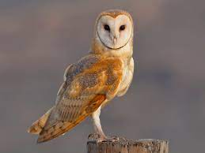
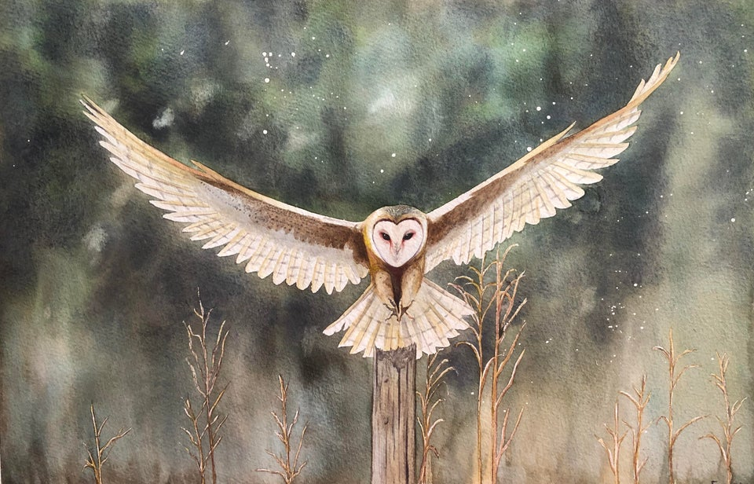
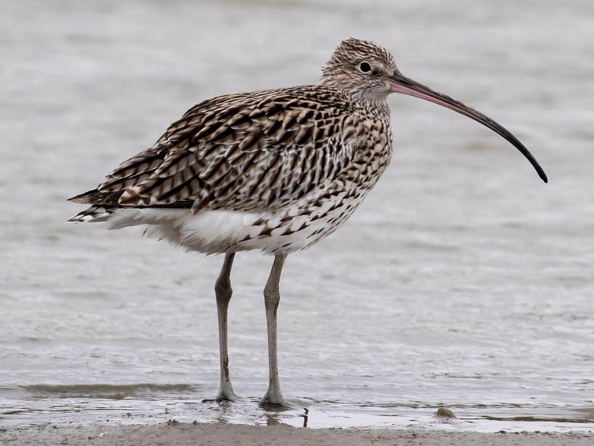
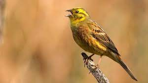
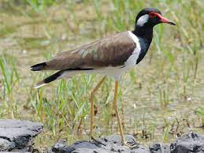

 Bird Conservation This website is about bird conservation Some birds that are protected in Ireland :  Barn Owl Habitat: farmland, grassland  Curlew Habitat: wet grasslands  Yellowhammer Habitat: dry, open country  Lapwing Habitat: pasture, wet grasslands